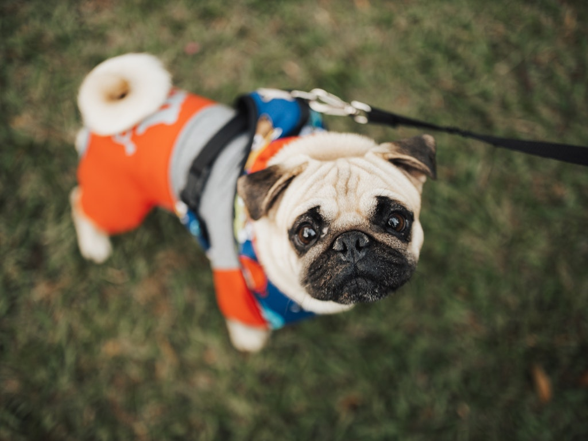

Dogs are devoted and gregarious creatures who like pleasing their owners. Dogs, in addition to offering companionship, actively aid to reduce tension and anxiety and provide us with a cause to be physically active. However, owning a dog is more than simply a game. Dog ownership is a great deal of responsibility!.
"Do dogs hate humans?".
Have you ever found yourself wondering, "Do dogs hate their owners?" Is it even possible for them to do so?"
While dogs do not dislike their owners, they do dislike some aspects of their owners. Despite being our best companions and having a strong sense of attachment to us, we can frequently annoy dogs with our acts and conduct. Even the most devoted and caring of canines will have a pet peeve about their owner, and although some of those peeves are unavoidable (such as trimming their nails or taking them to the groomer), there are some behaviours we can work on to make life simpler for our canines.
1. Disregarding their Boundaries
Dogs, like people, have a sense of personal space and value their solitude. They resent it when others, particularly those they do not know or trust, enter this place. Aggressive hugging or too friendly behaviour towards your dog may irritate them and cause them to behave out aggressively. Certain dogs may even resent it when their owners poke and prod their faces. As a result, it is recommended that you be understanding and respectful of their personal space
2. Shouting
One of the most disliked aspects of human activity by dogs is yelling. Yelling at your dog, or even at someone else, may significantly scare or disturb your dog. No one, not even your dog, enjoys being yelled at. It is so critical to remember not to raise your voice excessively in their company. If you are yelling to punish your dog, you may find that the anticipation of goodies is significantly simpler to discipline your dog than the fear of your displeasure.
3. Strong Fragrances
Dogs have an extremely acute sense of smell. Their sense of smell is 10,000 to 100,000 times more powerful than that of humans. Dogs utilise their sense of smell to recognise objects and even people. This explains why we frequently see them sniffing stuff wherever they go. The downside of having such a powerful sense of smell is that pungent odours and other strong aromas can be overbearing for our dogs and cause irritation. When your pets are not present, you should use air fresheners, deodorants, hairsprays, and other scents.
4. Making them Feel Ignored
As previously said, dogs are sociable beings. This is why they despise being alone or ignored. Dogs desire human connection, and being left alone for an extended period of time can trigger panic or separation anxiety. While you cannot spend all of your time with your dog, you should spend some quality time with them. Long play sessions, long walks, and cuddling can all help kids feel special. You should also consider taking them to dog-friendly cafés and restaurants whenever possible. If no one is available to accompany them while you are at work, you may want to consider enrolling them in a canine day care facility or hiring a dog sitter.
5. Routine Changes
Dogs enjoy routine. They like it when their owner gives structure and regularity for them. They feel more at ease when they are fed at regular intervals and taken for scheduled walks and play sessions. Going to bed too late or staying up too late may not only disrupt their pattern, but will also result in undesirable behaviour since the sudden change in feeding schedule or play time may drive them to act out.
6. Making them Interact with Dogs and People They Dislike
Dogs, like humans, have a group of people and other canines they like or loathe. Forcing them to interact or play with those they do not get along with irritates them and may drive them to act out by biting the other dog or barking excessively. A dog cannot be forced to like or detest someone. It is therefore not advisable to force your dog to interact with dogs or people he or she does not like.
7. Preventing them to Smell and Explore on Walks
When dogs go for walks, they prefer to investigate new things. They like to spend time sniffing the things they come across on their walks to form an association with those objects since they utilise their sense of smell more than their sight to recognise stuff. If you keep your dog on a leash too tightly and don't let them explore or look about, they won't be able to identify the objects they come across. Furthermore, by not allowing them to explore their environment and by putting them on a tight leash, you deprive them of their sense of freedom. Allow your dog to go slowly and investigate, and you'll notice how content he is.
8. Dressing them Up
One of the things dogs despise is being forced to dress up in unusual costumes and apparel. While we think dressed-up dogs are charming, they are not natural for dogs. Dressing them up makes them feel uneasy and frequently restricts their movement. To make matters worse, dogs are frequently humiliated when humans dress them up. While some dogs accept being dressed up, it is clear that they do not appreciate the experience.
9. Blowing in their Faces
Blowing on your dog's face causes discomfort and is an extremely unpleasant sensation for them. Blowing in their face may cause them to become too defensive, which may result in aggression in the form of a dog bite. Because a dog's face is far more sensitive than a human's, blowing in their face causes them to flinch.
10. Interrupting their Sleep
Dogs, like people, dislike being startled awake in their sleep. Older dogs, in particular, slumber deeper than younger canines and may not be awakened by approaching footsteps. A poke on the back to rouse them up may catch them off guard and prompt them to act out. We must strive to wake them up gradually rather than abruptly. Giving them a routine and structure may help them wake up on time, reducing the need for you to shake them awake.